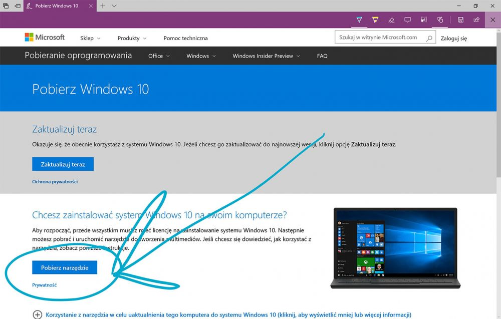
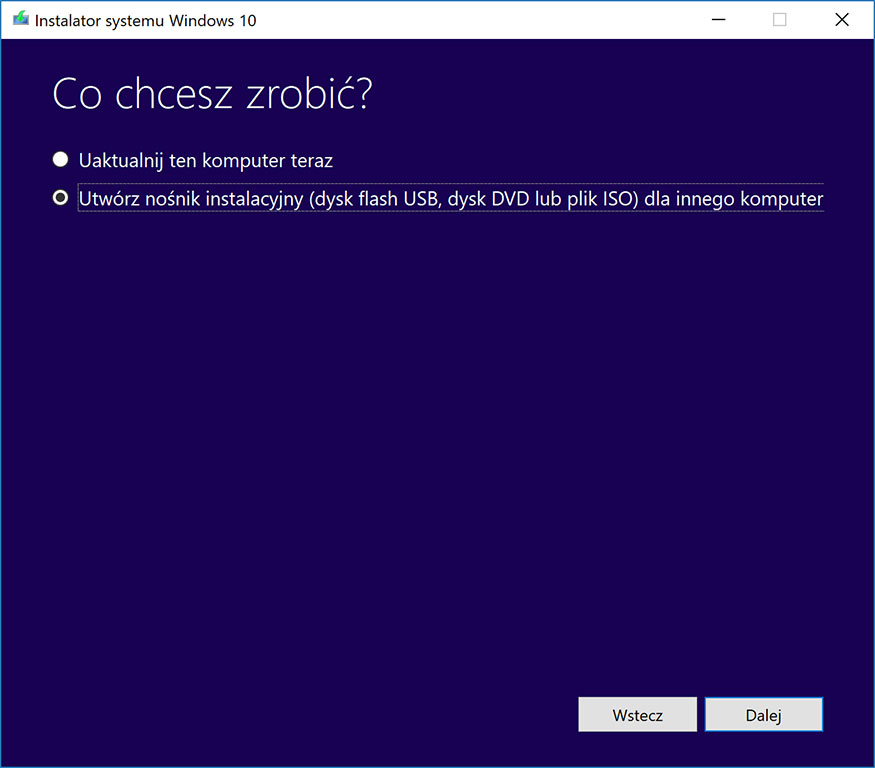
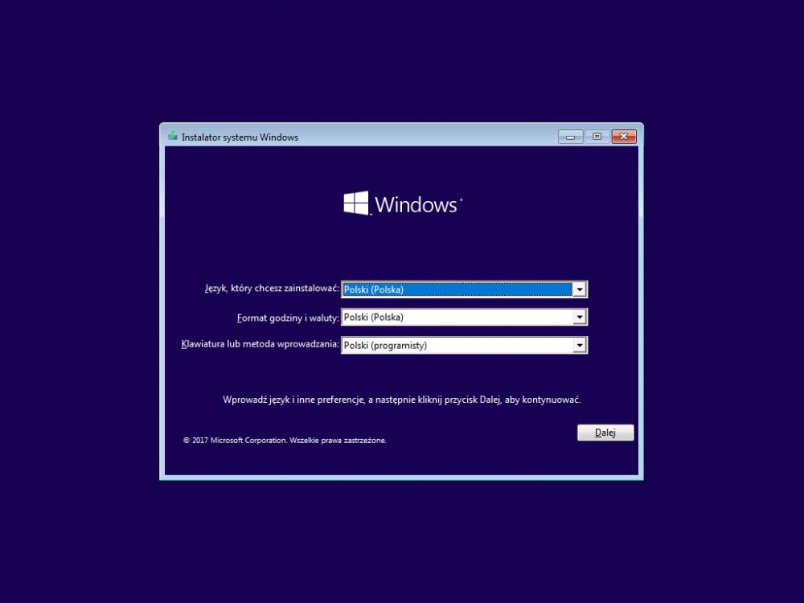
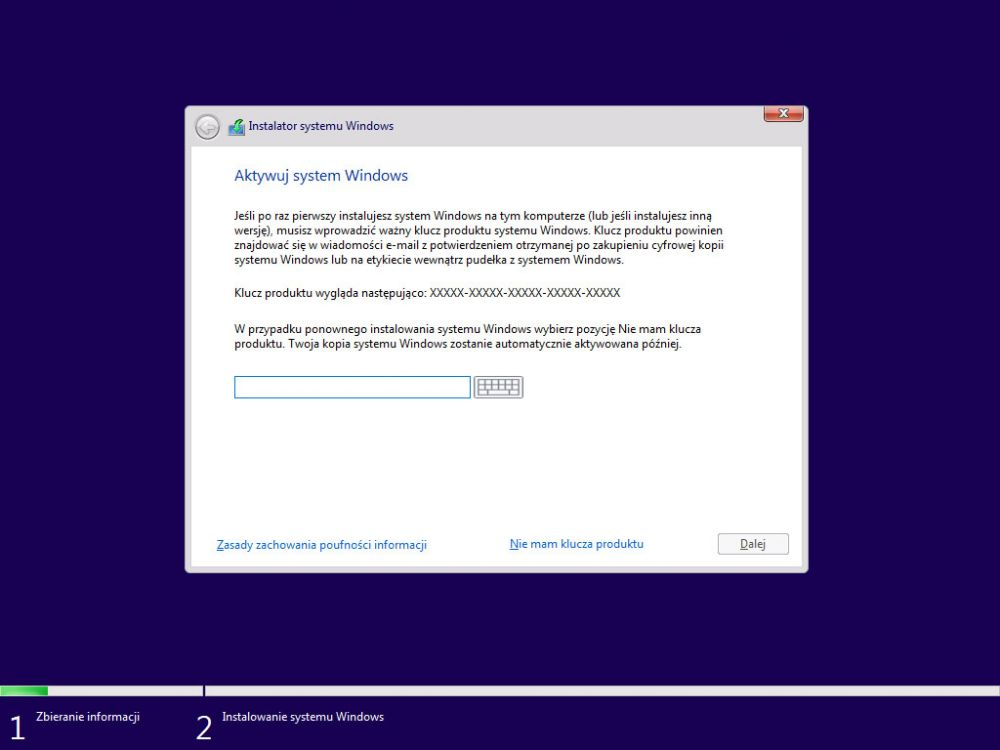
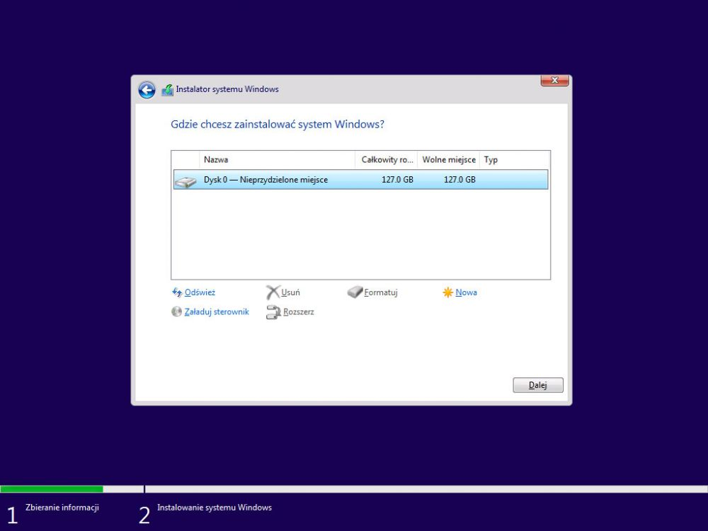
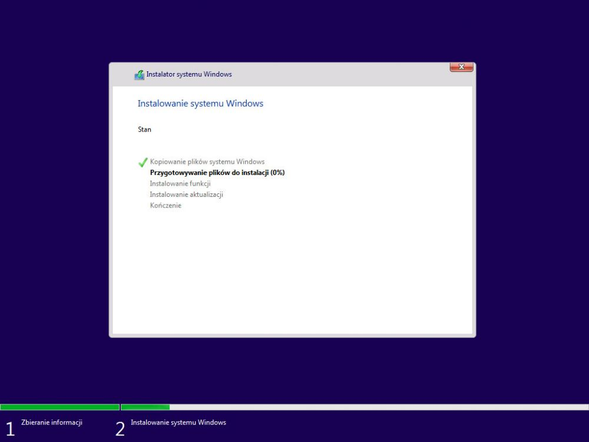
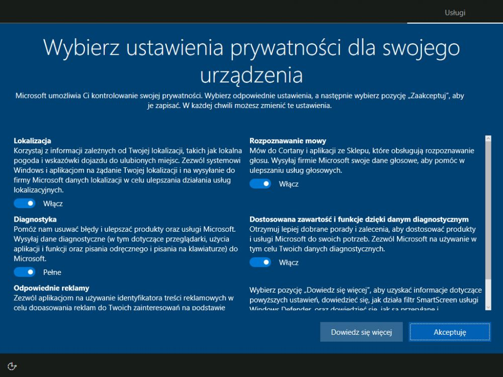

Instalacja systemu operacyjnego na komputerze.
3 najczęściej używane sytemy operacyjne to:
- Windows
- Linux
- Mac OS
Nośniki za pomocą których możemy zainstalować system:
- instalacja z płyty CD
- instalacj sieciowa
- instalacja na maszynie wirtualnej
- instalacja z innego nośnika (np. pendrive)
Instrukcja jak zainstalować sytem(Windows 10):
- Pobieramy na Płyte CD lub pendrive instalator Windows.
- Stwarzamy nośnik rozruchu. Uruchamiamy pobrany Media Creation Tool, wybierz funkcję Utwórz nośnik instalacyjny a następnie Dysk flash USB (pendrive) lub Plik ISO (Płyta CD).
- Ustawiamy w BIOS rozruch z nośnika CD/ pendrive. w każdym BIOSie ta funkcja może być w innym miejscu zależy od producenta płyty głównej. Jeśli to ustawiliśmy ujrzymy taki ekran klikamy "Dalej" a następnie "Zainstaluj teraz".
- Wprowadzamy klucz produktu który otrzymaliśmy po zakupie Windows 10.
- Partycjonowanie. Wybieramy teraz dysk na którym ma byc zainstalowany system albo możemy podzielić też dysk na partycje.
- Teraz musimy poczekać aż system się zainstaluje, po czym komputer uruchomi się ponownie
- Wybieramy język i dokonujemy ogólnej konfiguracji systemu. Komputer zacznie kończenie instalacji i gotowe!






